Mud
shrimp
Family Upogebiidae
updated Mar 2020
Where
seen? The large pale shrimp is sometimes seen in mangroves, also seagrass
areas near mangroves on our Northern shores. Elsewhere, some species are found in reefs and deeper waters.
Features: 4-6cm long. Long abdomen
with broad tail, a pair of larger pincers both about the same size.
Colours usually translucent, white or pale shades of yellow, pink, orange.
Its burrows in the mangrove mud can be 200cm deep and complex. Its
burrows are believed to help aerate the ground and allow other kinds
of smaller creatures to settle nearby. |

Mandai, Apr 11 |
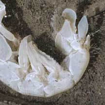
Mandai, Mar 11 |
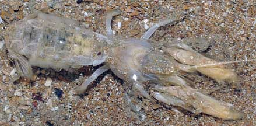
Tuas, Oct 10 |
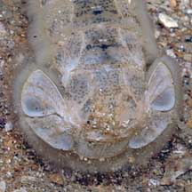
Close up of flared tail. |
| Mud
shrimps on Singapore shores |
| Other sightings on Singapore shores |
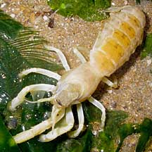
Tuas, Jun 10
Photo shared by Toh Chay Hoon on her
blog. |
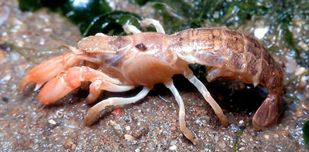
Pasir Ris Park, May 19
Photo shared by Jianlin Liu on facebook. |
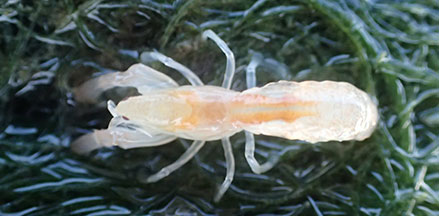
Pasir Ris Park, May 19
Photo shared by Jesselyn Chua on facebook. |
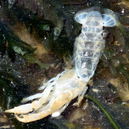
Moult
Pasir Ris Park, Jan 26
Photo shared by Loh Kok Sheng on facebook. |
|
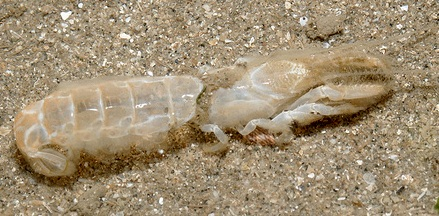
Changi, May 11
Photo shared by Loh Kok Sheng on his
blog. |
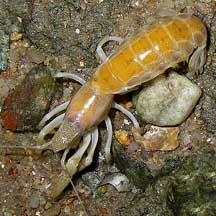
Changi, Oct 07
Photo shared by Toh Chay Hoon on her
flickr. |
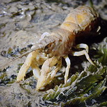
Changi, Oct 25
Photo shared by Adriane Lee on facebook |
|
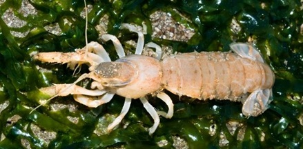
Pulau Sekudu, May 12
Photo
shared by Rene Ong on facebook. |
. |
. |
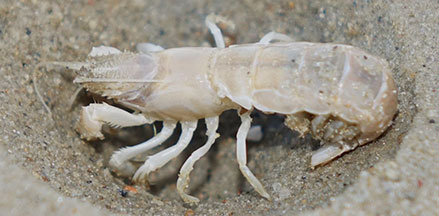
Chek Jawa, Dec 25
Photo
shared by Rui Quan Oh on facebook. |
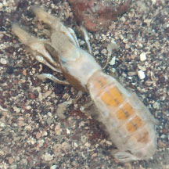
Beting Bronok, Jun 24
Photo shared by Tommy Tan on facebook. |
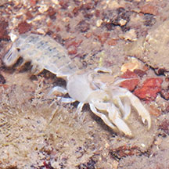
Beting Bronok, Jun 17
Photo shared by Loh Kok Sheng on facebook. |
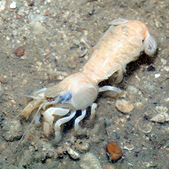
Beting Bronok, Jun 14
Photo shared by Marcus Ng on facebook. |
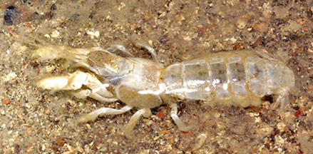
Beting Bronok, Jul 19
Photo shared by Able Yeo on facebook. |
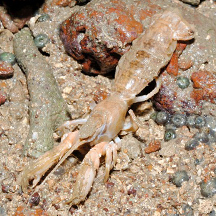
Beting Bronok, Nov 11
Photo shared by Loh Kok Sheng on his blog. |
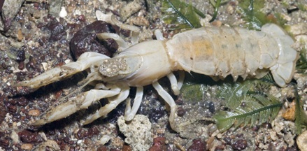
Beting Bronok, May 09
Photo shared by Marcus Ng on his
flickr. |
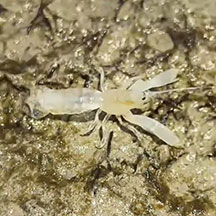
Pulau Semakau (West), Jul 25
Photo shared by Mathias Luk on fcebook. |
|
Acknowledgement
Grateful
thanks to Peter
Dworschak and Dr
Arthur Anker for identifying this
shrimp.
Links
- Family
Upogebiidae
on Marine Lobsters of the World on Marine Species Identification
Portal.
References
- Kyoko Kinoshita Burrow Structure
of the Mud Shrimp Upogebia major (Decapoda: Thalassinidea:
Upogebiidae) Journal of Crustacean Biology Vol. 22, No. 2
(May, 2002), pp. 474-480 The Crustacean Society.
- Lim, S.,
P. Ng, L. Tan, & W. Y. Chin, 1994. Rhythm of the Sea: The Life
and Times of Labrador Beach. Division of Biology, School of
Science, Nanyang Technological University & Department of Zoology,
the National University of Singapore. 160 pp.
- Jones Diana
S. and Gary J. Morgan, 2002. A Field Guide to Crustaceans of
Australian Waters. Reed New Holland. 224 pp.
- Debelius,
Helmut, 2001. Crustacea
Guide of the World: Atlantic Ocean, Indian Ocean, Pacific Ocean
IKAN-Unterwasserachiv, Frankfurt. 321 pp.
|
|
|